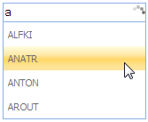

Properties
|
Name |
Description |
Type of the property |
Value it accepts |
Dependecy |
|
LoadingImage
|
When set to false, prevents rendering a loading image during filtering request. |
bool |
true/false |
NA
|
|
Delay
|
Sets the delay timer in milliseconds to get the suggestion list. |
bool |
true/false |
NA
|
Using Builder
The following steps explain the configuration of the loading options for an auto-complete textbox through Builder.
1. In View, invoke the auto-complete textbox helper with the control id as the first argument, followed by the LoadingImage and Delay methods with the desired options as arguments.
|
View[aspx] <%=Html.Syncfusion().AutocompleteTextBox("myAutocomplete") .RequestMapper("Home/GetData") .LoadingImage(true) .Delay(1000) %> |
|
View[cshtml] @{ Html.Syncfusion().AutocompleteTextBox("myAutocomplete") .RequestMapper("Home/GetData") .LoadingImage(true) .Delay(1000).Render(); } |
2. In the Controller, define the post action from which the auto-complete textbox requests the data source.
|
[AcceptVerbs(HttpVerbs.Post)] public ActionResult GetData(string QueryString) { Northwind context = SqlCE; //Get the data source var dataSource = from suggestion in context.Customers select suggestion.CustomerID;
//invoke the AutoCompleteActionResut return dataSource.AutocompleteActionResult(); }
|
3. Build and run the application.
Using Properties Model
The following steps explain the configuration of the loading options for an auto-complete textbox using properties model.
1. In the Controller, create an instance of AutoCompleteTextBoxModel, define the LoadingImage and Delay properties and pass the instance through view specific data to view as given below.
|
[Controller] public ActionResult Index() { //create and instance of AutocompleteTextBoxModel AutocompleteTextBoxModel myModel = new AutocompleteTextBoxModel(); myModel.RequestMapper = "Home/GetData"; myModel.LoadingImage = true; myModel.Delay = 1000;
//pass the instance through view data to the view ViewData["myAutocomplete"] = myModel; return View(); }
|
2. In View, invoke the auto-complete textbox helper with the view data key as the Control ID.
|
View[aspx]
<%=Html.Syncfusion().AutocompleteTextBox("myAutocomplete")%>
|
|
View[cshtml]
@{ Html.Syncfusion().AutocompleteTextBox("myAutocomplete").Render();}
|
3. In the Controller, define the post action to which the auto-complete textbox requests the data source.
|
[Controller] [AcceptVerbs(HttpVerbs.Post)] public ActionResult GetData(string QueryString) { Northwind context = SqlCE; //Get the data source var dataSource = from suggestion in context.Customers select suggestion.CustomerID;
//invoke the AutoCompleteActionResut return dataSource.AutocompleteActionResult(); }
|
4. Build and run the application.
The output is displayed in the following screenshot.

Figure 77: Auto-complete textbox with loading image